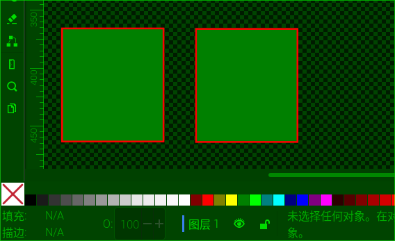

⇨对象转路径 Object to Path
快捷键： Ctrl+Shift+C
把选中的图形对象或文字对象转换成路径曲线。转换后，可以使用节点工具对图形的曲线进行调整。此命令不能把位图转换成路径，位图转路径需要使用菜单【路径⇨白描位图】命令。
对于文字来说，一旦转换为曲线，就不再具有字体属性，即变成图形，与字体无关了。
Inkscape中，有些操作必须以路径的方式操作，不能以图形的方式操作，比如插值。
驿窗注：什么是路径，什么是图形，二者怎么区分
用图形工具画出来的图形，比如用矩形工具画出的矩形、用椭圆工具画出的圆形、用星形工具画出的星形，它们只是图形，不是路径。这些图形，需要用菜单【路径⇨对象转路径】命令才能转成路径。
确认一个对象是图形还是路径，有两个简单的方法，一是选中对象后看窗口底部的提示信息，二是选中对象后看对象是否有节点，下面以矩形为例进行说明，圆形、星形等类似：
选中对象后看提示信息：创建一个矩形，然后选中这个矩形，此时，窗口底部的提示信息应该会提示矩形字样，这表示这个矩形是图形，不是路径。复制一个副本放到右侧，通过菜单【路径⇨对象转路径】，把右侧这个矩形从图形转换成路径，让该矩形路径处于选中状态，窗口底部的提示信息应该会提示路径字样，这表示这个矩形是路径，不是图形。如下面图1所示：
 图1：左侧是图形，右侧是路径；用选择工具选中；黄色箭头指向提示信息
选中对象后看是否有节点：按N键切换到节点工具，然后点击矩形：如果矩形是图形不是路径，那么会在矩形的三个角显示两个白色的小正方形和一个白色的小圆形，一共三个，它们三个是矩形的控制手柄，(不是节点)，用来调整图形，比如直角矩形调整为圆角矩形，或者调整整体尺寸；如果矩形是路径不是图形，那么会在矩形的四个角上各显示一个灰色的菱形，这四个菱形是矩形路径的节点，(灰色的正方形、菱形、圆形都是节点，不是控制手柄)，能显示出节点，就表示一定是路径，因为只有路径才有节点。如下面图2所示：
图2：左侧是图形，右侧是路径；使用上面图1相同的文件；用节点工具选中
最近一次更新：2024-11-01